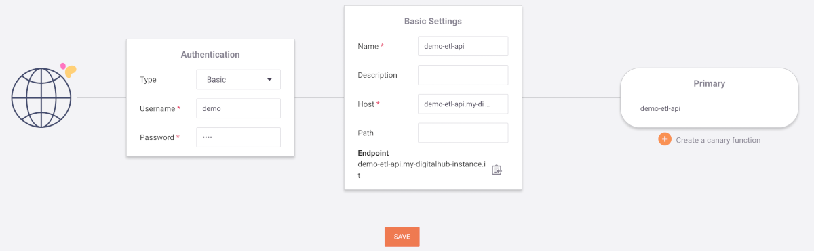

Expose datasets as API
We define an exposing function to make the data reachable via REST API:
%%writefile 'src/api.py'
import mlrun
import pandas as pd
import os
DF_URL = os.environ["DF_URL"]
df = None
def init_context(context):
global df
context.logger.info("retrieve data from {}".format(DF_URL))
di = mlrun.run.get_dataitem(DF_URL)
df = di.as_df()
def handler(context, event):
global df
if df is None:
return context.Response(
body="", headers={}, content_type="application/json", status_code=500
)
# mock REST api
method = event.method
path = event.path
fields = event.fields
id = False
# pagination
page = 0
pageSize = 50
if "page" in fields:
page = int(fields['page'])
if "size" in fields:
pageSize = int(fields['size'])
if page < 0:
page = 0
if pageSize < 1:
pageSize = 1
if pageSize > 100:
pageSize = 100
start = page * pageSize
end = start + pageSize
total = len(df)
if end > total:
end = total
ds = df.iloc[start:end]
json = ds.to_json(orient="records")
res = {"data": json, "page": page, "size": pageSize, "total": total}
return context.Response(
body=res, headers={}, content_type="application/json", status_code=200
)
Register the function:
api_fn = project.set_function("src/api.py", name="api", kind="nuclio", image="mlrun/mlrun", handler='handler')
Configure the function for deployment:
DF_KEY = 'store://datasets/demo-etl/process-measures-process_dataset-measures'
api_fn.set_env(name='DF_URL', value=DF_KEY)
api_fn.with_requests(mem='64M',cpu="250m")
api_fn.spec.replicas = 1
project.save()
Deploy (may take a few minutes):
api_fn.deploy()
Invoke the API and print its results:
res = api_fn.invoke("/?page=5&size=10")
print(res)
You can also use pandas to load the result in a data frame:
rdf = pd.read_json(res['data'], orient='records')
rdf.head()
Create an API gateway
Right now, the API is only accessible from within the environment. To make it accessible from outside, we'll need to create an API gateway.
Go to your Coder instance, go to the dashboard and access Nuclio. You will notice a demo-etl project, which we created earlier. When you access it, you will see the demo-etl-api function listed, but click on the API GATEWAYS tab on top instead. Then, click on NEW API GATEWAY.
On the left, if you wish, set Authentication to Basic and choose Username and Password.
In the middle, set any Name you want. Host must use the same domain as the other components of the Digital Hub. For example, if you access Coder at coder.my-digitalhub-instance.it, the Host field should use a value like demo-etl-api.my-digitalhub-instance.it.
On the right, under Primary, you must enter the name of the function, in this case demo-etl-api.

Save and, after a few moments, you will be able to call the API at the address you entered in Host! If you set Authentication to Basic, don't forget that you have to provide the credentials.